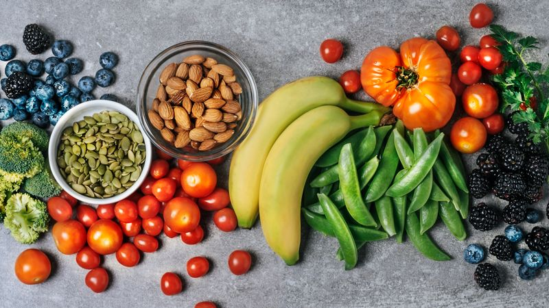
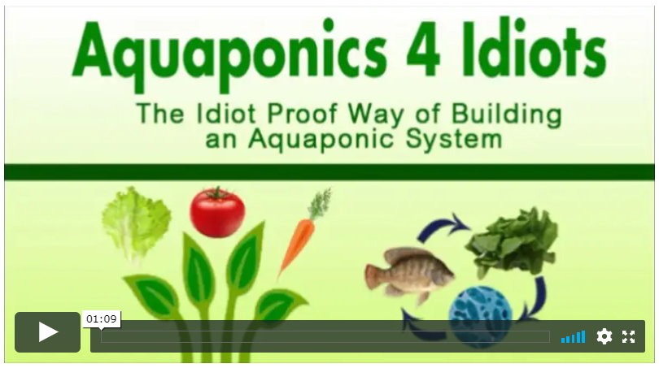

HOW TO EAT ORGANIC ON A TIGHT BUDGET (WITH A LITTLE HELP FROM SHRIMP)

Without a doubt, organic produce is better for you… But when the cost is 50% to 250% more than your local supermarket… most folks shrug their shoulders and give up on the idea
But don’t give up hope!
No need to cancel your Netflix account, or give up your next family holiday…
Believe it or not; you don’t need to be wealthy to eat healthily!
In fact, if you keep reading to the end, I’ll show you how you can actually save money while eating organic – all thanks to freshwater shrimp!
I know that sounds weird, but I discovered how it’s possible thanks to my hippie friend Carol.
But first;
Let’s look into how you can eat clean while shopping at your local supermarket.
I used to believe that if you can’t afford organic, don’t bother at all… but I was so wrong.
Do the best that you can; don’t subscribe to the ‘all or nothing’ mentality.
You can greatly reduce you and your family’s exposure to harmful pesticides and toxins buy taking baby steps toward smarter grocery purchases.
Firstly, you need to get familiar with your ‘friends’ of the grocery aisle and your ‘enemies’…
Stay away from ‘The Dirty Dozen’
The dirty dozen is a list of the most ‘toxin-rich’ produce you’ll find at your regular grocery store. If any of your favorite vegetables or fruits is on this list; then you should opt for organic instead (or try my alternative option later in this post).- Potatoes
- Apples
- Grapes
- Strawberries
- Celery
- Peaches/ nectarines
- Spinach
- Cucumbers
- Cherry tomatoes
- Imported snap peas
- Sweet bell peppers
- Leafy greens
Alternatively, these non-organic fruits and veggies are safe to buy from your local supermarket
Here’s a list of produce that has little to no pesticide exposure. Some of them naturally repel pests, like cabbage and onions. Some of them have thick skins – which are fine to eat once peeled.
- Sweet potatoes
- Avocadoes
- Sweet corn (beware of GMO)
- Cabbage
- Frozen sweet peas
- Pineapple
- Onion
- Mangoes
- Papayas
- Domestic cantaloupe
- Cauliflower
- Eggplant
- Grapefruit
- Kiwi
- Asparagus
- Mushrooms
- Watermelon
- Coconut
Wash your food
No matter if you’re eating organic or not; you should still wash your fresh produce…
And if you don’t have the budget or the time to visit Whole Foods, you might be forced to buy something from the ‘dirty dozen’…
If that’s the case; peel where you can, or wash them thoroughly to try to remove some of the harmful pesticides.
The best way to wash your veggies is to fill up a large bowl with four parts water and one part vinegar and allow your produce to soak for an hour before using it. Then rinse off and enjoy.
Wholesale butchers
Get into the habit of using a wholesale butcher… or at least a local butcher.
Depending on what country you live in; different meats may have been given growth hormones.
So by visiting an independent butcher, you can ask for help choosing meats without the hormones (local butchers are always friendly and willing to help).
IF YOU'RE TRYING TO EAT CLEAN, DON'T RUIN THE BENEFITS WITH PROCESSED OILS
Vegetable oil sounds healthy but, it couldn’t be further from the truth.
‘Vegetable oil’ is a healthy sounding name marketers use for artificial cooking oils like canola oil, soybean oil, corn or sunflower oil – try to limit your consumption of them as they’re linked to cancer.
Margarine is equally as toxic – natural butter is a far healthier option.
When it comes to cooking oils – stick with either, extra virgin olive oil, coconut oil, butter, clarified butter (ghee) or lard (yes, lard is better than artificial cooking oils).
Avoid Canned
As convenient as canned foods are; most cans are lined with BPA, which is a hormone disruptor.
How to eat organic and SAVE MONEY
My hippie friend Carol has an EX-boyfriend who had been growing his own (ahem) medicine… for his anxiety.
And when he moved out of Carol’s place – he left behind a brilliant homemade Aquaponics set up.
It’s not Hydroponics – that requires spending money on plant food.
Aquaponics is an organic gardening secret that grows up to 10 times the plants, in half the time, with healthier plants…
And fish do all the work!
AQUA-PONICS is the combination of hydroponics with aquaculture.

Aqua-Culture is the process of growing fish in a tank… the fish produce Ammonia, Algae, Minerals, and all kinds of other by-products that would otherwise need to be constantly filtered.
But plants thrive on Ammonia, Algae, Minerals and Nitrates!
Everything that fish produce naturally.
If you connect the fish-tank water to the water of the hydroponics system… your plants get an automatic food supply of almost everything they need to grow from the fish water… and in turn… the plants filter the water for the fish.
Since Carol’s EX moved out; she’s been growing her own organic vegetables.
And she eats the freshwater shrimp as they grow big and plump!
==>Click here to see how it’s done
I’m always really surprised by the volume of fresh produce she’s able to grow in such a small space…
It’s a win for me as Carol always gives me a large basket of fresh organic veggie’s to take home whenever I visit.
Apart from the immense savings from growing her own organic veggies and seafood, she saves space in her refrigerator because she only picks what she needs – when she needs it.
Which means less food waste!
Anyone can cheaply and easily set up a homemade Aquaponic system… and grow an abundance of food without hardly any effort at all!
I asked Carol to share her secrets so I could post them here… she agreed, but I could tell by the tone of her reply that she would need to spend a bit of time preparing… So I decided to let her off the hook and found an online expert to share instead.
After hours of research, I discovered:
Aquaponics 4 Idiots – without a doubt, the most comprehensive guide that comes jam-packed with all the step-by-step instructions, secrets and common mistakes to avoid.
You get step-by-step video instructions on how to build your very own homemade Aquaponic system.
And a ton of free books on the tips and tricks of growing organic – Click here
Of course, you can skip the aquaponics and grow what you can with a basic herb garden… but unless you have ‘green thumb’ – herb gardens or classic vegetable patches always seem to be a struggle (at least for me anyway).
On the flipside; once aquaponics is set up – everything is on autopilot.
The steps to create an aquaponics setup are so easy, anyone could do it!
Whatever your preference; growing your own organic produce is a great way to offset your grocery bill.
And by keeping clear of the ‘dirty dozen’ at your local supermarket and avoiding unnatural cooking oils; you’re greatly reducing you and your family’s toxin exposure.
Good luck!